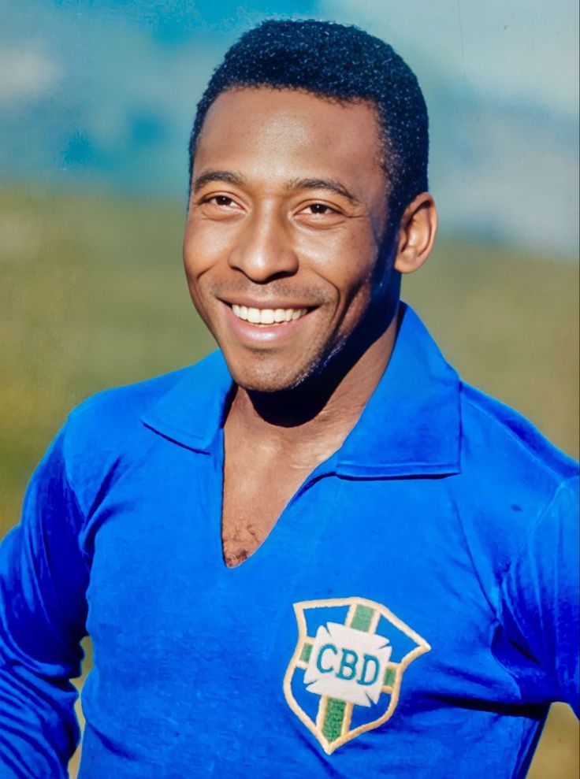
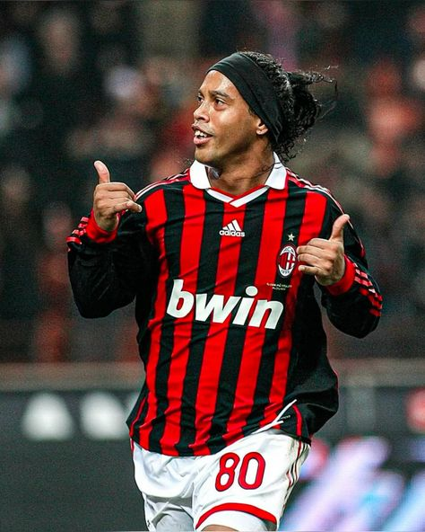
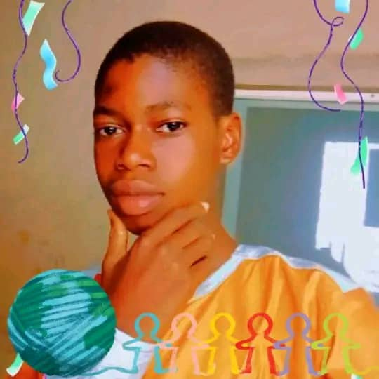

🌟 Iconic Footballers
- ⚽ Cristiano Ronaldo: A goal-scoring machine known for his speed, power, and incredible finishing.

- 🔥 Lionel Messi: A dribbling genius and playmaker, regarded as one of the greatest ever.

- 👑 Pele: A three-time World Cup winner and a symbol of Brazilian football excellence.
 - 🏆 Diego Maradona: A football magician known for the legendary ‘Hand of God’ goal.

- 💪 Zinedine Zidane: A midfield maestro with vision, skill, and elegance on the ball.

- 🚀 Thierry Henry: Arsenal’s all-time top scorer and a Premier League legend.

- ⚡ Ronaldinho: A football artist known for his dazzling dribbles and flair.
 - 🔥 Johan Cruyff: A pioneer of ‘Total Football’ and a true legend of the game.

- ⚽ Ayomide: Ayomide, a rising star with pace, skill, and determination, is set to shine as Arsenal’s future gem.
